Since the buoyancy force, 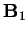, is purely vertical and
axisymmetric about the  -axis, the analysis of the first order flow
correction for buoyancy is considerably simplified by erecting a new set of
spherical coordinates:
-axis, the analysis of the first order flow
correction for buoyancy is considerably simplified by erecting a new set of
spherical coordinates:
| 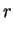 | 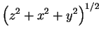 | (8.63) | |
| 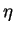 | 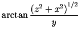 | (8.64) | |
| 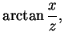 | (8.65) |
| 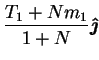 | (8.66) | ||
| 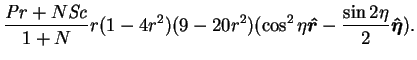 | (8.67) |
The scalars defining the decomposition of the force are:
| 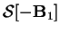 |  |
||
| 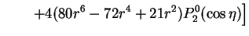 | (8.68) | ||
| 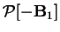 | 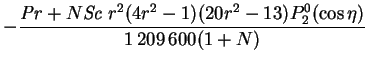 | (8.69) | |
| (8.70) |
Again, the velocity is purely poloidal:
| 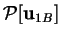 |  |
(8.71) | |
| 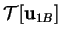 | (8.72) |
| 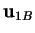 | 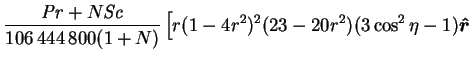 | ||
| 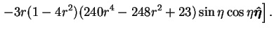 | (8.73) |
As
is independent of the azimuthal angle,  ,
the stream-lines of
,
the stream-lines of
 are confined to planes passing through
the
are confined to planes passing through
the  -axis and can be represented by the contours of a
Stokes's stream-function:
-axis and can be represented by the contours of a
Stokes's stream-function:
| 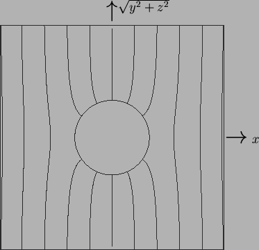 |
| 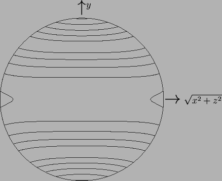 |
Since the stream-function is nonnegative in the lower hemisphere,
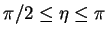, the flow is radially outward along the  -axis
and inward in the 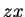-plane, as might be expected from the distribution
of vapour mass fraction and temperature given by 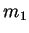 and 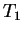
(fig. 8.5).
-axis
and inward in the 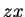-plane, as might be expected from the distribution
of vapour mass fraction and temperature given by 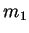 and 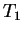
(fig. 8.5).
The first order correction to the flow field due to buoyancy is similar to that in a long axially heated horizontal tube (Bejan & Tien 1978). The cause is the same: the redistribution of buoyancy forces due to the primary flow leaves the lightest fluid directly above the centre of the sphere (see fig. 8.5) or tube axis. This leads to a vertical flow, which parts at the ceiling and moves outward and downward along the confining walls before returning inward along the horizontal mid-plane. The situation is the same in the lower half, but reversed.
The result of this section supports the conclusion of Mallinson and de Vahl Davis (1977) that (in the analogous pure fluid heat transfer problem) the thermal correction to the flow field depends only on the Grashof and Prandtl numbers in the combination, 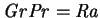.